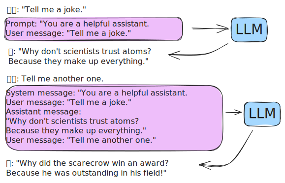

Workshop: Global Management
Contents
- What are LLMs?
- Understanding LLM capabilities and limitations
- Fundamentals of prompting
- Break
- LLMs in the classroom
- Essential skills
- Academic integrity
- Conclusion
Guide for Lecturers at BFH
- BFH’s Stance: Technologies that support the learning process and are relevant in practice should be integrated into teaching.
- Use of AI in Teaching: The majority of students will use AI tools. Students should learn to use technologies competently and to critically question them.
Virtual Academy Knowledge Base [more up-to-date than PDF]
What are Large Language Models (LLMs)?
What is Artifical Intelligence?
A branch of computer science that aims to create machines that can perform tasks that typically require human intelligence.
What is a Large Language Model?

An LLM is a type of generative AI model that is trained to predict the next word following the input (prompt).
How to train a language model
- An LLM learns to predict the next word in a sequence, given the previous words: \[ P(word | context) \]
- Think of as “fancy autocomplete” (but very very powerful and sopisticated)

How does an LLM generate text?

Sampling

Auto-regressive generation
Text is generated one word at a time (actually tokens, not words).

Generated text depends on the generative model and the context.
Every word (token) is given an equal amount time (computation per token is constant).
Auto-regressive generation
Foundation models
A foundation model, or large language model (LLM):
- is a type of machine learning model that is trained to predict the next word following the input (prompt).
- is trained “simply” to predict the next word following a sequence of words.
- does not necessarily produce human-like conversations.
: What is the capital of France?
: What is the capital of Germany? What is the capital of Italy? . ..
Training process

Figure courtesy of Andrej Karpathy
Assistant models
Trained (fine-tuned) to have conversations: turn-taking, question answering, not being rude/sexist/racist.

- Foundation model has learned to predict all kinds of text, including both desirable and undesirable text.
- Fine-tuning narrows down the space of all possible output to only desirable, human-like dialogue.
- Model is aligned with the values of the fine-tuner.
How do Chatbots work?
- Designed to present the illusion of a conversation between two entities.
How do chatbots actually work?


An assistant model is a conversation simulator

- An assistant is trained to respond to user prompts in a human-like way.
- Simulates possible human conversations.
- Has no intentions. It is not an entity with its own goals.
- Does not have a “personality” or “character” in the traditional sense. It can be thought of as a role-playing simulator.
- Has no concept of “truth” or “lying”. The model is not trying to deceive the user, it is simply trying to respond in a human-like way.
Understanding LLM capabilities and limitations
Capabilities and limitations
What are LLMs good at?
- Fixing grammar, bad writing, etc.
- Rephrasing
- Analyzing texts
- Writing computer code
- Answering questions about a knowledge base
- Translating languages
- Creating structured output
- Factual output with external documents or web search
Limitations
- They make stuff up (hallucinate)
- They learn biases from the training data
- Weird vocabulary, e.g. delve
- (Chatbots have privacy issues)
Hallucination

- LLMs can generate text that is not true, or not based on any real-world knowledge.
- This is known as “hallucination”. A better term would be “confabulation”.
Can an LLM tell the truth?
- How would you know if an LLM is able to give you factual information?
- How would you test this?
: What is the capital of Uzbekistan?
: Tashkent
It looks like the LLM knows the capital of Uzbekistan1.
Knowledge base
- A knowledge base is a collection of facts about the world.
- You can
ask(retrieve) andtell(store) facts.
- You can
- An LLM is not a knowledge base.
- LLMs generate text based on on how probable the next word is given the context, not based on stored facts.

Biases
| Biases in LLMs | Source | Examples |
|---|---|---|
| Training data bias | Text from internet, books, articles. | Stereotypes reflecting gender, race, religion. |
| Representation bias | Underrepresented groups/perspectives in data. | Less accurate responses for minority cultures. |
| Algorithmic bias | Training and fine-tuning algorithms. | Optimizations for fluency and coherence may lead to preference for dominant cultural narratives. |
| User interaction bias | Adaptation based on user interactions. | Increased biased or harmful content generation. |
Privacy concerns
| Privacy Concerns | Issue | Examples |
|---|---|---|
| Data memorization | Memorizing sensitive information. | Reproducing phone numbers, addresses. |
| Training data leakage | Unauthorized dissemination of confidential data. | Summarizing proprietary documents. |
| User query logging | Storing sensitive user interactions. | Exposing private queries if data is mishandled. |
| Queries used for training | User queries may be used for further training. | Personal data in queries could be inadvertently included in training data. |
Fundamentals of Prompting
Prompting

What is a prompt?
- An LLM’s task is to complete text.
- A prompt is a piece of text (instruction) that is given to a language model to complete.
PROMPT : Write a haiku about a workshop on large language models.
ASSISTANT : Whispers of circuits,
Knowledge blooms in bytes and bits,
Model learns and fits.
- The response is generated as continuation of, and conditioned on, the prompt.
More technical definition: The output is generated by auto-regressively sampling from the probability distribution over the vocabulary, conditioned on the prompt.
Prompt engineering

- LLMs learn to do things they were not explicitly trained to do: translation, reasoning, etc.
- Often, these capabilities need to be “unlocked” by the right prompt.
- But what is the right prompt?
- The answer is very similar to what you would tell a human dialogue partner/assistant.
- You can increase the probability of getting the desired output by providing context and examples.
Basics of prompting
OpenAI give a set of strategies for using their models effectively:
These include:
- writing clear instructions
- providing reference texts
- splitting tasks into subtasks
- giving the LLM ‘time to think’
- using external tools
Writing clear instructions
- Instructions should be clear and unambiguous.
- Think of an LLM as a role-playing conversation simulator: Indicate which role the model (persona) should adopt.
Adopt a persona (role)
: You are an expert on learning techniques. Explain the concept of ‘flipped classroom’ in one paragraph.
: You are an expert financial derivatives. Explain the concept of ‘flipped classroom’ in one paragraph.
Provide reference texts
- Provide a model with trusted and relevant information.
- Then instruct the model to use the provided information to compose its answer.
Instruct the model to answer using a reference text
This can be extended to retrieval-augmented generation (RAG). First create a database of documents, then retrieve the most relevant documents, based on a user’s query. These are then included in the prompt to the model. The model is instructed to use the information in the documents to compose its answer.
Create structured output
- Explanation: Instruct the model to generate structured output.
- E.g. provide a table, a list, a diagram, etc.
- Use delimiters to indicate distinct parts of the input.
- Example: Extract information from a text and present it in a table.
Structured prompting techniques
- In-Context Learning: Provide examples within the prompt.
- Thought Generation: Instruct the model to think step-by-step.
- Decomposition Techniques: Break down tasks into subtasks.
In-Context learning
- Explanation: Providing examples or context within the prompt itself.
- Few-shot prompting: Give a few examples.
- Example: Translate the following sentences:
- English: ‘What time is it?’ -> French: ‘Quelle heure est-il?’
- English: ‘Where is the library?’ -> French:
- Example: Translate the following sentences:
- Zero-shot prompting: No examples, relies on pre-trained knowledge.
- Example: Translate the following sentence…
Thought generation
- Explanation: Encourages the model to show its reasoning process.
- Chain-of-Thought (CoT) prompting: encourages the LLM to “explain” its intermediate reasoning steps.
- Can often be induced by simply instructing the model to think step-by-step or Take a deep breath and work on this problem step-by-step (Yang et al. 2023).
Chain-of-Thought example
Instead of this:
: The odd numbers in this group add up to an even number: 4, 8, 9, 15, 12, 2, 1. Yes or no?
Do this:
: Is this statement correct? The odd numbers in this group add up to an even number: 4, 8, 9, 15, 12, 2, 1.
Reason through the problem step-by-step. Start by identifying the odd numbers. Next, add them up. Finally, determine if the sum is even or odd. Write down your reasoning steps in a numbered list.
Why does this work?
Decomposition techniques
- Explanation: Force the LLM to break down complex tasks into manageable subtasks.
- Least-to-Most Prompting: Start simple, increase complexity.
- Example: List items, calculate cost…
- Plan-and-Solve Prompting: Separate planning and execution phases.
- Example: Understand the problem, devise a plan…
Hands-on practice: Prompting
Open this activity.
- Practice writing prompts for different tasks ( 20 minutes).
- Summarize a research article and write an essay using an LLM ( 30 minutes).
If you need further help with prompting techniques, see these websites:
LLMs in the Classroom
ChatGPT Edu
- Access to GPT-4o, excelling in text interpretation, coding, and mathematics
- Data analytics, web browsing, and document summarization
- Build GPTs, custom versions of ChatGPT, and share them within university workspaces
- Significantly higher message limits than the free version of ChatGPT
- Improved language capabilities across quality and speed, with over 50 languages supported
- Robust security, data privacy, and administrative controls
- Conversations and data are not used to train OpenAI models
GPTs

Hands-on practice: GPTs
- Try out custom GPTs from various categories in the GPT store.
- Discuss with your neighbour
- Did you discover any useful GPTs?
- What are the benefits and limitations of using GPTs in the classroom?
Extended cognition

Deskilling vs. upskilling

Writing tasks in the AI era
- Writing is a core skill: critical thinking, persuasion, argumentation, understanding.
- Text creation is secondary in learning: focus is on underlying skills.
- Learning objectives: Benefits of writing tasks should be clearly and convincingly conveyed.
- Students should be equipped for effective (controlled) use of AI.
AI can do my homework
- We can think of this as cheating.
- More useful: cheating means bypassing useful cognition and therefore missing out on learning.
- Cheating an ethics problem.
- Bypassing cognition is a learning problem.
- Not a new problem: books, encyclopedias, calculators, spell checkers, etc.
Controlled use of LLMs
| Task Category | Specific Tasks |
|---|---|
| Editing tasks | Create/improve different versions of sections. |
| Transitions | Write and compare transitions. |
| Improve drafts | Critique and refine drafts. |
| Writing styles | Rewrite sections for different audiences. |
| Controversial statements | Identify controversial points and strengthen arguments. |
| Research journal | Keep a diary and use LLM for reflection. |
Sport vs. writing
- Technological advancements in sports: a useful analogy for learning?
- Distinction between training and competition.
| LZR Racer swim suit | AI-base writing tools | |
|---|---|---|
| Improvement | Reduced Resistance, Increased Buoyancy | Improved Grammar, Formulation, Content Creation |
| Fairness | Provided an Unfair Advantage, Led to Record Performances | Considered Unfair in Academic Contexts |
| Impact | Banned to Maintain Competitive Integrity | Raises Questions of Originality and Skill Development |
Learning Environments
Understanding the value of effort
- Cheating can be a symptom that learners do not understand or value the importance of their own work.
- Just like in sport: if we take shortcuts during training, we won’t get fit.
- Understanding the purpose is important to endure discomfort.
- Learners need to understand what they are supposed to learn, why it is valuable, and why effort and discomfort are necessary.
Fraud triangle

Learning Environments that promote cheating
| Factors | Descriptions |
|---|---|
| High pressure | High stakes increase cheating. Fear of failure reinforces this. |
| Lack of intrinsic motivation | Engagement and relevance are important. Lacking these makes cheating more attractive. |
| Perceived injustice | Unfair grading leads to cheating. |
| Low fear of getting caught | Low risk encourages cheating. |
| Peer influence | Widespread cheating among peers pressures students to join in. |
| Low self-efficacy | Doubts about one’s own abilities increase cheating as the seemingly only option. |
Strategies to Reduce Cheating
| Strategies | Descriptions |
|---|---|
| Foster intrinsic motivation | Spark genuine interest. Provide choices and practical applications. |
| Mastery learning | Clear learning objectives. Focus on mastery of content. Include constructive and corrective feedback in formative assessments. |
| Reduce pressure | Diversify assessment methods. Use portfolios and low-stress tests to reduce anxiety. |
| Strengthen self-efficacy | Provide constructive feedback and promote peer learning (peer tutoring, peer review). |
| Create a culture of integrity | Open discussion about academic integrity. Set clear guidelines and promote community ethics. |
Academic integrity
Academic Integrity: Plagiarism
| Types of Plagiarism | Description |
|---|---|
| Unattributed use | Using the work or ideas of others without proper attribution. |
| Minor changes or translations | Using the work of others with minor changes or translations without attribution. |
| Self-plagiarism | Reusing substantial parts of one’s own work without proper citation. |
| Joint works | Reusing jointly written publications without proper acknowledgment. |
How to cite ChatGPT
E.g. APA Style: Cite as software (not as personal communication).

Documentating AI use
- Specifying prompts works well for inexperienced users, but inadequately reflects complex processes.
- Experienced users work with dialogues and several tools, not monolithic prompts in ChatGPT.
- Working with copilot (code): no traceable prompt input.
- Instead: Document the process, including the tools used and the steps taken.
- Include used tools and steps in appendix, with optional graphical representation.
- Serves both evaluation and self-reflection.
- Is documentation meaningful in the long term, once the use of AI-based tools has become commonplace?
Detecting AI use
Can be detected by the use of specific vocabulary and phrases: “delve”, “vibrant”, “embark”, “it’s important to note”, ” based on the data provided”.
Detection tools are not very useful, and can be easily circumvented.
According to Fleckenstein et al. (2024)
- Generative AI can write papers that are undetectable.
- Teachers overestimate their detection abilities.
Questions / Discussion
References
Footnotes
What it is actually doing is responding with the most likely sequence following the question.↩︎